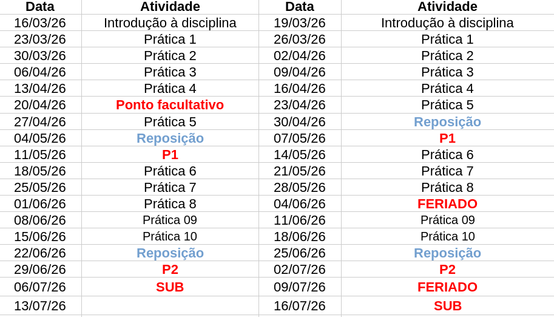
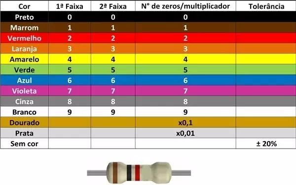

Física Experimental B - Apresentação da disciplina
Nícolas Morazotti
Apresentação da disciplina
Sobre a disciplina
- Trata de conceitos de eletricidade e magnetismo associados a circuitos elétricos;
- Introdução aos instrumentos e métodos de medição de grandezas
elétricas
- ohmímetro
Sobre a disciplina
- Trata de conceitos de eletricidade e magnetismo associados a circuitos elétricos;
- Introdução aos instrumentos e métodos de medição de grandezas
elétricas
- ohmímetro
- voltímetro
Sobre a disciplina
- Trata de conceitos de eletricidade e magnetismo associados a circuitos elétricos;
- Introdução aos instrumentos e métodos de medição de grandezas
elétricas
- ohmímetro
- voltímetro
- amperímetro
Ementa da disciplina
- Componentes resistivos em corrente contínua
- Corrente alternada
- Capacitância
- Indutância
- Circuitos Ressonantes
Avaliação
- A avaliação ocorrerá entre relatórios semanais e provas
A nota final será calculada como
\begin{align*} N = 0.3\times\langle{R}\rangle + 0.7\times\langle{P}\rangle \end{align*}- \(\langle{R}\rangle\): média dos relatórios
- \(\langle{P}\rangle\): média das provas
- A aprovação é dada para \(N\ge6.0\) (seis) e frequência \(\ge 75\%\)
Avaliação: Relatórios
- Cada relatório corresponderá a uma equipe – de, preferencialmente, três pessoas
- Todas as práticas serão avaliadas segundo um relatório entregue na semana seguinte da prática
- O modelo de relatório está disponível na apostila, devendo ser impresso ou, pelo menos, seguindo aquele padrão
Avaliação: Relatórios
O relatório é formado de:
- Folha de rosto Apresenta informações da disciplina, título, data, turma, nome, número RA
Avaliação: Relatórios
O relatório é formado de:
- Folha de rosto
- Resumo Descrição compacta da experiência, apresentando o que foi realizado: objetivos, métodos empregados, resultados mais relevantes
Avaliação: Relatórios
O relatório é formado de:
- Folha de rosto
- Resumo
- Objetivos Descrição dos objetivos específicos da experiência
Avaliação: Relatórios
O relatório é formado de:
- Folha de rosto
- Resumo
- Objetivos
- Fundamentos teóricos Descrição completa do problema experimental e fundamentos importantes para a interpretação dos resultados
Avaliação: Relatórios
O relatório é formado de:
- Folha de rosto
- Resumo
- Objetivos
- Fundamentos teóricos
- Material utilizado Catalogar instrumentos utilizados, incluindo marca, modelo e precisão.
Avaliação: Relatórios
O relatório é formado de:
- Folha de rosto
- Resumo
- Objetivos
- Fundamentos teóricos
- Material utilizado
- Procedimento experimental Descrição detalhada de como as medidas foram realizadas, bem como o esquema de montagem, de forma a reproduzir tal experimento. Não é uma cópia do procedimento presente no roteiro.
Avaliação: Relatórios
O relatório é formado de:
- Folha de rosto
- Resumo
- Objetivos
- Fundamentos teóricos
- Material utilizado
- Procedimento experimental
- Apresentação dos resultados Mostrar dados obtidos em formas de tabelas, apresentando resultados finais, com respectivas incertezas e unidades, e também gráficos e análises, quando convier.
Avaliação: Relatórios
O relatório é formado de:
- Folha de rosto
- Resumo
- Objetivos
- Fundamentos teóricos
- Material utilizado
- Procedimento experimental
- Apresentação dos resultados
- Conclusões Análise, interpretação, resposta a possíveis questões em aberto. Discussão das fontes de erro. Comparação com valores da literatura.
Avaliação: Relatórios
O relatório é formado de:
- Folha de rosto
- Resumo
- Objetivos
- Fundamentos teóricos
- Material utilizado
- Procedimento experimental
- Apresentação dos resultados
- Conclusões
- Bibliografia
- Apêndices Útil para apresentar cálculos para detalhar o relatório, sem tirar o foco do principal.
Avaliação: Provas
- Serão realizadas duas provas individuais, por escrito
- No final do semestre, haverá uma prova substitutiva, substituindo a menor nota obtida nas provas
- “Sub do bem” para quem precisa, “sub do mal” para quem não precisa
- A média \(\langle P\rangle\) é a aritmética entre as notas das provas: \(\langle P\rangle = 0.5(P_1+P_2)\)
Primeiro Módulo
| Prática 1 | Associação de Resistores |
| Prática 2 | A lei de Ohm |
| Prática 3 | Análise de circuitos |
| Prática 4 | Transferência de potência |
| Prática 5 | Introdução à corrente alternada |
| Prática 6 | Circuito RC - Resposta temporal |
Segundo Módulo
| Prática 7 | Circuito RC - Resposta em frequência |
| Prática 8 | Circuito RL - Respostas temporal e em frequência |
| Prática 9 | Circuito RLC em série - Resposta em frequência |
| Prática 10 | Circuito RLC em Série - Resposta temporal |
Cronograma

Material
- Durante a disciplina, será necessário utilizar uma calculadora científica, tanto nas práticas quanto nas provas
- Não é necessária uma muito avançada
Material

Material
- Durante a disciplina, será necessário utilizar uma calculadora científica, tanto nas práticas quanto nas provas
- Não é necessária uma muito avançada
- CELULARES, TABLETS E NOTEBOOKS NÃO SERÃO PERMITIDOS DURANTE PRÁTICAS E PROVAS.
Introdução
Fenômenos elétricos e grandezas
- Fenômenos presentes nas mais diversas situações do cotidiano, em todas as áreas do conhecimento
- Mudou radicalmente o modo de vida das pessoas no final do século XIX
- Neste curso, apresentamos a confecção e projeção de circuitos elétricos simples, bem como exploramos e quantificamos fenômenos desse assunto
Fenômenos elétricos e grandezas
- Conceito fundamental: carga elétrica
- Propriedade intrínseca da matéria
- No regime de estudo, podemos pensar como um fluido em movimento
- Unidade: Coulomb (C)
Fenômenos elétricos e grandezas
- Carga em movimento \(\to\) fenômenos interessantes
- Corrente elétrica
- No SI, a unidade é o Ampère \((1A = 1 C/s)\)
- Para a carga se movimentar, é necessária a diferença de potencial (ddp) ou Tensão Elétrica (U)
- Unidade de \(U\): Volt (V)
- A carga se move para reduzir seu potencial
Fenômenos elétricos e grandezas
- Quando em movimento, a carga sofre resistência em seu movimento
- Unidade de Resistência R: Ohm (\(\Omega\))
Fenômenos elétricos e grandezas: múltiplos
| PREFIXO | SÍMBOLO | FATOR |
|---|---|---|
| Giga | G | \(10^{9}\) |
| Mega | M | \(10^{6}\) |
| Quilo | k | \(10^{3}\) |
| Mili | m | \(10^{-3}\) |
| Micro | \(\mu\) | \(10^{-6}\) |
| Nano | n | \(10^{-9}\) |
| Pico | p | \(10^{-12}\) |
Resistência

Figure 1: Código de cores para a indicação da resistência. Fonte: Mundo da elétrica, acessado 21 de ago. de 2025.